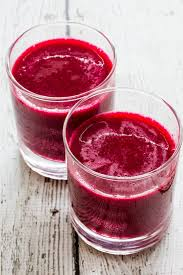
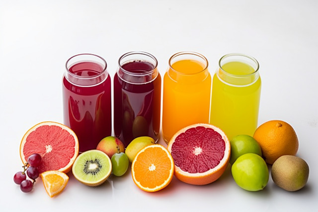

Importance of berries to our health
Brain health.
berries, especially blue berries,contain compounds that have been shown to improve memory and cognitive function.May help reuce the risk of cancer
the antioxidants and flavonoids in berries may help reduce stress and anxiety by promoting relaxation and improving moodSupports skin and eye health.
berries containing anthocyanins, which have been shown to improve skin elasticity, reduce the appearance of the fine lines and wrinklesBoost Immunity:.
Berries are rich in vitamin C and other nutrients that strengthen the immune system.Versatile and Delicious:
Beyond their health benefits, berries are easy to incorporate into meals and snacks, making healthy eating enjoyable.Rich in Antioxidants:
Berries contain compounds like anthocyanins and resveratrol, which help combat oxidative stress and protect cells from damage..Anti-Inflammatory Properties:
Berries can reduce inflammation in the body, which is associated with many chronic diseases.High in Fiber:
The fiber in berries promotes healthy digestion, supports gut health, and helps with weight management by keeping you full longer.Aid in Blood Sugar Control:
Berries have a low glycemic index and can improve insulin sensitivity, making them a great choice for managing blood sugar levels.SOME OF OUR BERRY PRODCUTS ARE
Best berry juice ever
 PRICES AND QUANTITIES